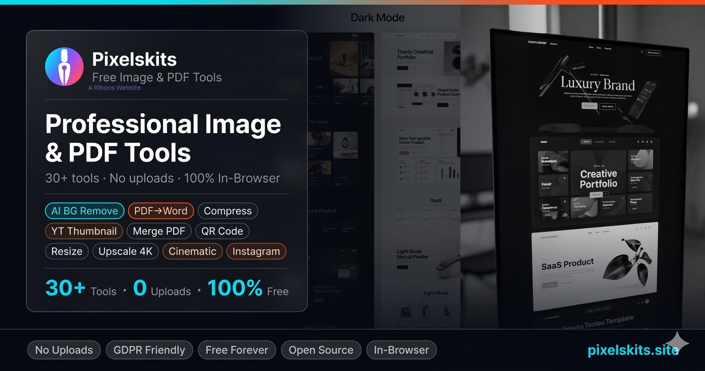

What you can do
- Convert PDF to Word and Word to PDF
- Create a PDF from one or more images
- Merge multiple PDF files into one
- Convert PDF pages to JPG, PNG, or WebP
Handle everyday PDF tasks in one place. Pixelskits includes PDF conversion, merging, editing, image export, and Word document tools with simple browser-based workflows.

Open Pixelskits toolsPixelskits is built for quick everyday work with images, PDFs, and creator graphics. There is no account, subscription, or installation. Where a tool is browser-based, your file is processed on your device rather than uploaded as a routine step.
Use the focused guide above to understand the task, then open the toolkit and choose the matching feature. Always review the result before sharing or publishing it.
Yes. The free pdf tools workflow is available at no cost on Pixelskits and does not require an account.
No. Pixelskits is designed to work in a modern desktop or mobile browser.
Yes. The site is responsive, although large files may process more quickly on a desktop or laptop.